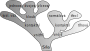

Síly v biomechanice#
V biomechanice se síly působící na tělo dělí na dvě základní kategorie: externí a interní síly.
Externí síly (vnější síly)#
Externí síly jsou ty, které působí na tělo z okolního prostředí. Mají významný vliv na rovnováhu, stabilitu a pohyb těla.
Gravitační síla (\(\vec{F}_g\))#
Gravitační síla (tíhová síla), kterou Země přitahuje tělo k sobě.
kde \(m\) je hmotnost těla a \(g\) gravitační zrychlení (přibližně 9.81 m/s²). Značí se také \(\vec{W}\).
Charakteristika |
Popis |
|---|---|
Působiště |
těžiště |
Velikost |
\(F_G = m \cdot g\) |
Směr |
směrem do středu Země, směrem dolů |
Nositelka |
těžnice |

Warning
Hmotnost není tíha
Hmotnost je fyzikální veličina, která vyjadřuje množství látky v tělese. Je to skalární veličina a její hodnota je vždy stejná, nezávisle na tom, kde se těleso nachází (na Zemi, Měsíci nebo ve ve vesmíru).
Tíha je síla, kterou působí Země (nebo jiné gravitační těleso) na objekt. Na rozdíl od hmotnosti závisí na gravitačním poli, ve kterém se těleso nachází. Je to vektorová veličina – má tedy velikost i směr.
Vlastnost |
Hmotnost (m) |
Tíha (FG) |
|---|---|---|
Definice |
Množství látky v tělese |
Síla působící na těleso v gravitačním poli |
Jednotka |
Kilogram (kg) |
Newton (N) |
Typ veličiny |
Skalární |
Vektorová (má směr) |
Závislost na poloze |
Nemění se |
Závisí na gravitačním poli |
Příklad |
Hmotnost 70 kg na Zemi i na Měsíci |
Tíha na Zemi ≈ 686 N, na Měsíci ≈ 114 N |
from IPython.display import IFrame
IFrame('https://www.geogebra.org/classic/KDav5HcX', width=800, height=600, style="border: 1px solid black")
Reakční síla podložky (Ground Reaction Force - GRF)#
Reakční síla podložky je síla, kterou podložka působí na těleso stojící nebo pohybující se na jejím povrchu. Tato síla je důsledkem třetího Newtonova zákona akce a reakce – každá akce vyvolává stejně velkou, ale opačně orientovanou reakci.
:width:200px
Reakční síla podložky má dvě složky:
Normálovou složku \(F_N\) – kolmá k povrchu podložky.
Tečnou složku \(F_T\) – rovnoběžná s povrchem podložky a často spojovaná s třením.
Rozklad reakční síly na složky
Celkovou reakční sílu podložky \(\vec{F}_R\) můžeme rozložit na dvě základní složky:
Normálová složka (\(F_N\))
Směřuje kolmo k podložce.
Vyrovnává tíhu tělesa a zabraňuje jeho proniknutí do podložky.
Při statické rovnováze platí:
- \[ F_N = F_G = m \cdot g \]
Pokud je těleso v klidu, je normálová síla rovna tíze tělesa.
Charakteristika
Popis
Působiště
težiště tlaků
Velikost
určuje se výpočtem
Směr
kolmo na podložku proti možnému posuvu
Nositelka
kolmice na podložku
Tečná složka (\(F_T\))
Leží v rovině podložky a souvisí s třením.
Odpovídá za odpor vůči pohybu tělesa po podložce.
Maximální hodnota tečné složky se řídí Coulombovým zákonem tření:
\[ F_T \leq \mu \cdot F_N \]kde \(\mu\) je součinitel tření (statického nebo dynamického).
Charakteristika
Popis
Působiště
težiště smykových napětí
Velikost
určuje se výpočtem
Směr
rovnoběžně s podložkou
Nositelka
kolmice na podložku

Tlak \(p\)#
Tlak je fyzikální veličina vyjadřující sílu působící na jednotku plochy. Udává, jak velká síla působí na určitou plochu kolmo k jejímu povrchu.
Značka: \(p\)
Jednotka: pascal (Pa) = N/m\(^2\)
Vztah:
\[ p = \frac{F_N}{A} \]kde:
\(F_N\) je normálová síla (v N),
\(A\) je plocha kontaktu (v m²).
Osoba s hmotností 70 kg stojí na podložce:
Normálová síla:
\[ F_N = 70 \, \text{kg} \cdot 9.81 \, \text{m/s}^2 = 686.7 \, \text{N} \]Plocha chodidel: Předpokládejme, že celková plocha chodidel je 0,03 m\(^2\).
Výpočet tlaku:
\[ p = \frac{686.7 \, \text{N}}{0.03 \, \text{m}^2} = 22,890 \, \text{Pa} \, (\text{≈ 22.9 kPa}) \]
Veličina |
Symbol |
Jednotka |
Význam |
|---|---|---|---|
Normálová síla |
\(F_N\) |
N |
Síla působící kolmo na povrch |
Kontaktní plocha |
\(A\) |
m² |
Plocha, na kterou působí síla |
Tlak |
\(p\) |
Pa (N/m\(^2\)) |
Síla působící na jednotku plochy |
Při nerovnoměrném rozdělení tlaku můžeme určit místo působení kontaktní síly jako:
Center of Pressure (COP) – těžiště tlaků#
Center of Pressure (COP) je bod na povrchu podložky, ve kterém by měla být soustředěna výslednice všech tlakových sil působících mezi tělesem a podložkou, aby vyvolala stejný moment jako skutečné rozložení tlaků.
COP je bod působení výsledné reakční síly podložky.
Při udržování rovnováhy se COP neustále mění kvůli drobným pohybům těla (tzv. posturální kyv).
Pro udržení rovnováhy musí být COP udržováno v rámci základny opory (BOS).
\(F_{N}\) jako reakční sílu podložky,
\(x_i, y_i\) jako souřadnice jednotlivých tlakových bodů,
\(F_i\) jako sílu působící v každém bodě,
pak souřadnice COP (\(x_{COP}, y_{COP}\)) lze vyjádřit jako:
Pokud je člověk v klidu a stabilní, COP je blízko projekce těžiště (COG) na podložku.
Při pohybu (např. při chůzi) se COP dynamicky přesouvá podle rozložení hmotnosti a tlaku.
Odporové síly#
Tření (\(\vec{\mathbf{F}}_t\)): Tření je síla, která vzniká mezi dvěma povrchy, které se dotýkají a pohybují proti sobě nebo se snaží o pohyb. Tření vždy působí proti směru pohybu nebo proti směru snahy o pohyb.
Statické tření (\(\vec{\mathbf{F}}_{ts}\)): Působí mezi tělesy, která jsou v klidu a brání jim v pohybu.
\[ F_{ts} \leq \mu_s N\]kde \(\mu_s\) je koeficient statického tření a \(N\) je normálová síla.
Kinetické tření (\(\vec{\mathbf{F}}_{td}\)): Působí mezi tělesy, která se pohybují proti sobě.
\[ F_{tk} \leq \mu_k N\]kde \(\mu_k\) je koeficient kinetického tření a \(N\) je normálová síla.

Odpor prostředí (\(\vec{\mathbf{F}}_o\)): Odpor prostředí (např. odpor vzduchu nebo odpor kapaliny) je síla, která působí proti pohybu tělesa v daném prostředí. Velikost odporu prostředí závisí na rychlosti tělesa a na vlastnostech prostředí.
Odpor vzduchu (pro nízké rychlosti):
\[F_o = -b v\]kde \(b\) je konstanta odporu prostředí a \(v\) je rychlost tělesa pro malé hodnoty Reynoldsova čísla.
Odpor vzduchu (pro vysoké rychlosti):
\[F_o = -1/2 \rho C_d A v^2\]kde \(\rho\) je hustota prostředí, \(C_d\) je součinitel odporu, \(A\) je plocha tělesa a \(v\) je rychlost tělesa.

Interní síly (vnitřní síly)#
Interní síly vznikají uvnitř těla a jsou generovány svalovou kontrakcí, napětím vazů nebo reakcemi mezi kostmi. Tyto síly neovlivňují pohyb těla jako celku, ale jsou klíčové pro udržení stability a vnitřní rovnováhy.
Typy interních sil:
Svalové síly – síly generované kontrakcí svalů, které umožňují pohyb a stabilizaci kloubů.
Síly působící mezi kostmi – například kompresní síly v kloubech při zatížení.
Napětí vazů a šlach – pasivní síly, které stabilizují klouby a omezují nadměrný pohyb.
Intraabdominální tlak – tlak v dutině břišní, který pomáhá stabilizovat páteř při zátěži.

Srovnání externích a interních sil
Typ síly |
Externí síly |
Interní síly |
|---|---|---|
Původ |
Působí z okolního prostředí |
Vznikají uvnitř těla |
Příklady |
Gravitační síla, tření, reakce podložky |
Svalová kontrakce, napětí vazů |
Účel |
Pohyb těla jako celku, rovnováha |
Stabilizace kloubů, řízení pohybu |
Měřitelnost |
Lze měřit přímo (např. silovou plošinou) |
Obtížně měřitelné, často odhadované modelem |